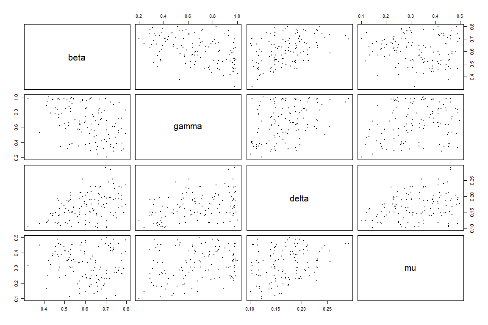

7 Further waves
We follow the same procedure for subsequent waves, with a couple of caveats.
7.1 Next wave: wave 1
7.1.1 Training wave 1 emulators
First of all we train a new set of emulators, in the same way we did for ems0:
sampling <- sample(nrow(wave1), 40)
train1 <- wave1[sampling,1:9]
valid1 <- wave1[!seq_along(wave1[,1])%in%sampling,1:9]
new_ranges <- map(names(ranges), ~c(min(wave1[,.]), max(wave1[,.]))) %>% setNames(names(ranges))
ems1 <- emulator_from_data(train1, output_names, new_ranges, quadratic = T)
deltas <- apply(wave1[,10:14], 2, mean)/map_dbl(ems1, ~.$u_sigma)
ems1 <- emulator_from_data(train1, output_names, new_ranges, deltas = deltas, quadratic = TRUE)
for (i in 1:length(ems1)) ems1[[i]]$output_name <- output_names[i]
ems1_adjusted <- map(seq_along(ems1), ~ems1[[.]]$adjust(train1, output_names[[.]]))
names(ems1_adjusted) <- output_names7.1.2 Evaluating implausibility across all waves
We can apply diagnostics to this as before, using valid1 as the validation set. Assuming the diagnostics are acceptable, we then proceed to consider implausibility - however, we need the implausibility over the whole input space, and the new emulators have only been trained on a subset thereof. We must therefore consider implausibility across all waves, rather than just the wave under consideration at the time.
all_waves <- c(ems0_adjusted, ems1_adjusted)
all_targets <- c(targets, targets)
emulator_plot(all_waves, var = 'maximp', targets = all_targets, cb=TRUE)
This may seem an unwieldy way to approach this (and it is, at present); however, it is important to remember that the number of emulators at each wave may not be the same; for example, if we have had to remove a model output at wave 1, then the targets would be accordingly changed. In this illustration case, we did not have to worry about doing so since we have assumed that all targets can be emulated.
If we compare the implausibility plot we just obtained with the implausibility plot from the previous wave, we see that the red area has increased significantly: this shows that wave 1 is shrinking down the non-implausible space, exactly as we expected.
The remainder of the analysis proceeds much as in the first wave. In generating new parameter sets, we would of course provide all_waves to the point generation function.
new_new_points <- generate_new_runs(all_waves, ranges, n_points = 120, z = all_targets)
#> 293 non-implausible points generated. Applying V-optimality...
#>
plot(new_new_points, pch = 16, cex = 0.5)
We can compare the distribution of parameter sets at the end of wave0 with that of parameter sets at the end of wave1:

The last step is to create wave2, that will be used to train
wave2 emulators.
next_next_wave <- getOutputs(new_new_points, seq(10,30,by=5))
wave2 <- data.frame(cbind(new_new_points,next_next_wave))%>%
setNames(c(names(ranges),paste0("I",seq(10,30,by=5)), paste0("EV",seq(10,30,by=5))))Through the simulator_plot function we see how much better the wave2 parameter sets perform compared to wave1 and wave0 parameter sets.
all_points <- list(wave0[1:9], wave1[1:9], wave2[1:9])
simulator_plot(all_points, targets, palette=c("#F9F920", "#FA8816","#C98CFF"))
Next waves of the process can be produced simply repeating all the steps in section 7.1.
7.2 Next wave: wave 2
7.2.1 Training wave 2 emulators
sampling <- sample(nrow(wave2), 40)
train2 <- wave2[sampling,1:9]
valid2 <- wave2[!seq_along(wave2[,1])%in%sampling,1:9]
new_new_ranges <- map(names(ranges), ~c(min(wave2[,.]), max(wave2[,.]))) %>% setNames(names(ranges))
ems2 <- emulator_from_data(train2, output_names, new_new_ranges, quadratic = T)
deltas <- apply(wave2[,10:14], 2, mean)/map_dbl(ems2, ~.$u_sigma)
ems2 <- emulator_from_data(train2, output_names, new_new_ranges, deltas = deltas, quadratic = TRUE)
for (i in 1:length(ems2)) ems2[[i]]$output_name <- output_names[i]
ems2_adjusted <- map(seq_along(ems2), ~ems2[[.]]$adjust(train2, output_names[[.]]))
names(ems2_adjusted) <- output_names7.2.2 Evaluating implausibility across all waves
As before, we need to consider implausibility across all waves, rather than just the wave under consideration at the time.
all_waves <- c(ems0_adjusted, ems1_adjusted, ems2_adjusted)
all_targets <- c(targets, targets, targets)
emulator_plot(all_waves, var = 'maximp', targets = all_targets, cb=TRUE)
To generate new parameter sets:
new_new_new_points <- generate_new_runs(all_waves, ranges, n_points = 120, z = all_targets)
#> 228 non-implausible points generated. Applying V-optimality...
#>
plot(new_new_new_points, pch = 16, cex = 0.5)
We now create wave3:
next_next_next_wave <- getOutputs(new_new_new_points, seq(10,30,by=5))
wave3 <- data.frame(cbind(new_new_new_points,next_next_next_wave))%>%
setNames(c(names(ranges),paste0("I",seq(10,30,by=5)), paste0("EV",seq(10,30,by=5))))Through the simulator_plot function we check how much better the wave3 parameter sets perform compared to the original wave2 parameter sets.

The graph does not show a clear improvement in the performance of wave3 parameter sets compared to that of wave2 parameter sets. To understand the reason behind this, let us compare the variability of the model outputs we are emulating with the emulators uncertainty. Below we show the ensemble variability and the uncertainty for ems0 and ems2 for each of the emulated outputs.
targets$I10$sigma
#> [1] 25.27
targets$I15$sigma
#> [1] 40.99
targets$I20$sigma
#> [1] 46.48
targets$I25$sigma
#> [1] 43.98
targets$I30$sigma
#> [1] 40.3
sigmas0 <- map_dbl(ems0, ~.$u_sigma)
sigmas0
#> I10 I15 I20 I25 I30
#> 25.02941 39.90951 46.96881 50.12662 52.34127
sigmas2 <- map_dbl(ems2, ~.$u_sigma)
sigmas2
#> I10 I15 I20 I25 I30
#> 9.607539 16.217742 18.393964 16.282659 14.902990We see that while ems0 uncertainties (sigmas0) are similar or larger than the ensemble variabilities, ems2 uncertainties (sigmas2) are smaller than the ensemble variabilities. Since the emulators variance is smaller than the uncertainty inherent to the model, the non-implausible
space already contains acceptable matches and is unlikely to
decrease in size in the next iteration.
For this reason, we conclude here the iterating process and therefore the tutorial. Note that if we could revise the uncertainties present in our model and decrease them, we would then be able to perform other waves of the history matching process and shrink the non-implausible space down further.